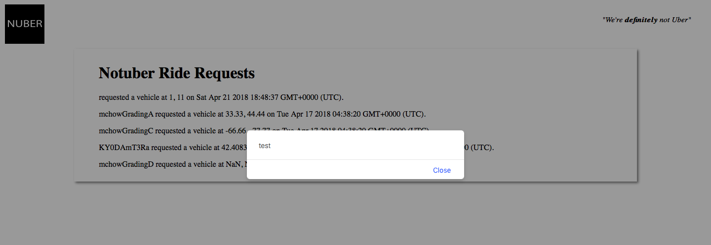
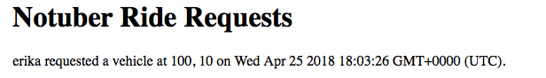
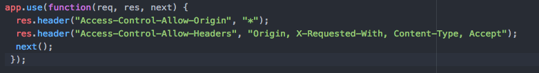
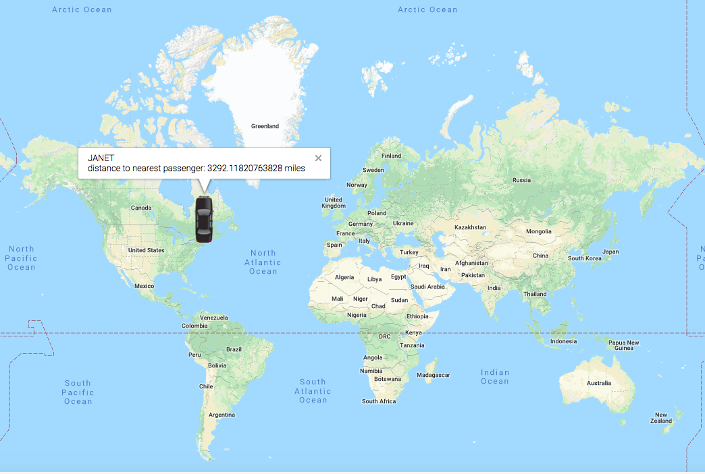

The product, notuber, is designed to accept data from passengers and vehicles, store that data in a database, and provide it again in different contexts. More specifically, there is an interface for passengers that records their location and time of their request, and it provides them with a visualization of the vehicles that checked in within the past five minutes. Similarly, when the vehicles check in, they are provided with a visualization of the recent passengers who requested rides. However, the server can be accessed by bypassing this interface. I will perform a threat review of the product made by Chris Markus, in order to shed light on security vulnerabilities of the product, and to point out ways in which we can improve them.
I began by using curl to look for places that are vulnerable to Cross Site Scripting attacks. Specifically, I used curl to send POST requests to the /rides path. This was black box testing, as I did not look at the code to find this issue. I also used curl to enter incorrect latitude data to the same /rides path. This was also black box testing. Lastly, I looked at the code and found that CORS was enabled, which was white box testing.
The first issue I found was a vulnerability that allowed me to write code and have it executed every time the webpage http://secret-ravine-44507.herokuapp.com is visited. The code that I wrote made a popup appear on the page, and it shows that a hacker can make whatever changes to the webpage they like. The second vulnerability allows me to enter impossible longitude and latitude data as my location. This means that a passenger or vehicle can, for example, claim to have a latitude that is greater than the maximum, 90. This causes the map to give false information about the number of passengers present. The last issue that I found allows for anyone to access the server and post data to the database. This is generally a bad practice because it means that everyone has access to the data, and that any person or website, regardless of use case or intent, can use the database.
Cross Site Scripting Attack. Code that I wrote is executed and results in a popup alert every time the page http://secret-ravine-44507.herokuapp.com is visited. This issue is high severity because as the attacker, I can choose to make any changes I wish to the website, including redirecting to a different page, or overwriting the html displayed on the page. I found this issue by entering the following curl command in my terminal:
curl --data "username=<script>alert('test')</script>&lat=1&lng=1"https://secret-ravine-44507.herokuapp.com/rides
The command goes runs without errors, and now upon visiting the page mentioned above, the following appears:
My suggestion to resolve this issue is to sanitize input for the server’s /rides path. This can be done by rejecting input that has any characters that are not alphanumeric.
The server does not check that longitude and latitude input is valid. This means that I was allowed to post data to the server that said a passenger was at a location with latitude 100 and longitude 10, even though the maximum possible latitude on earth is 90. This is a medium severity issue since it allows for impossible data to be shown on http://secret-ravine-44507.herokuapp.com and on the frontend Assignment 2 page. I found this security vulnerability by using the following curl command:
curl --data "username=erika&lat=100&lng=10"https://secret-ravine-44507.herokuapp.com/rides
The following is a screenshot of the issue on http://secret-ravine-44507.herokuapp.com:
Cross Origin Resource Sharing is enabled for anyone who wishes to send a POST request to the server. This is a bad programming practice because it means that any person can alter the state of the server/ the database from any location. This is a low severity issue, since it is an intended feature. The location of this issue is in the server, and I found it by looking at the code. One possible way to resolve this issue is to require user authentication for the Assignment 2 website, and only authorize (using OAuth) the Assignment 2 website to GET and POST to the server.
Here is a screenshot of the code that enables CORS:
And the following is the resulting issue on my Assignment 2 page, which I have hooked up to the server http://secret-ravine-44507.herokuapp.com/rides (I have done this since I don’t have access to my partner’s Assignment 2):
Here, we can see that the closest passenger is 3239 miles away, but there are no passengers shown on the map. To fix this issue, I would recommend checking that the latitude is within -90 and 90, and that the longitude is within -180 and 180, and rejecting all post requests containing data that does not fall within these bounds.
The good news is that the first two issues are very easy to fix. By sanitizing input and not allowing for invalid inputs, these two vulnerabilities can be solved. This requires minimal work, and has a low cost. The third issue is less simple to fix. It requires changing the functionality of the product, because it means restricting access to the API. To do this, we could use OAuth to authorize only the Assignment 2 webpage to use the server. It would also help to require user authentication in order to use this webpage, which would give each user their own username. This is a more costly fix, but it would also improve the product’s usability.
I learned about Issue 1 from the example in class. I learned about CORS from the lab, and I found out what OAuth is from the website: https://mobilejazz.com/blog/which-security-risks-do-cors-imply/.